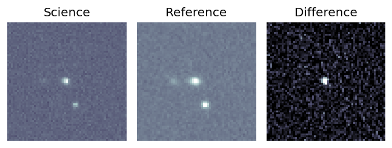
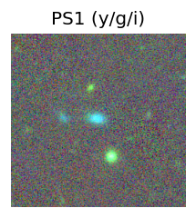
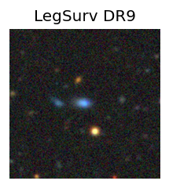
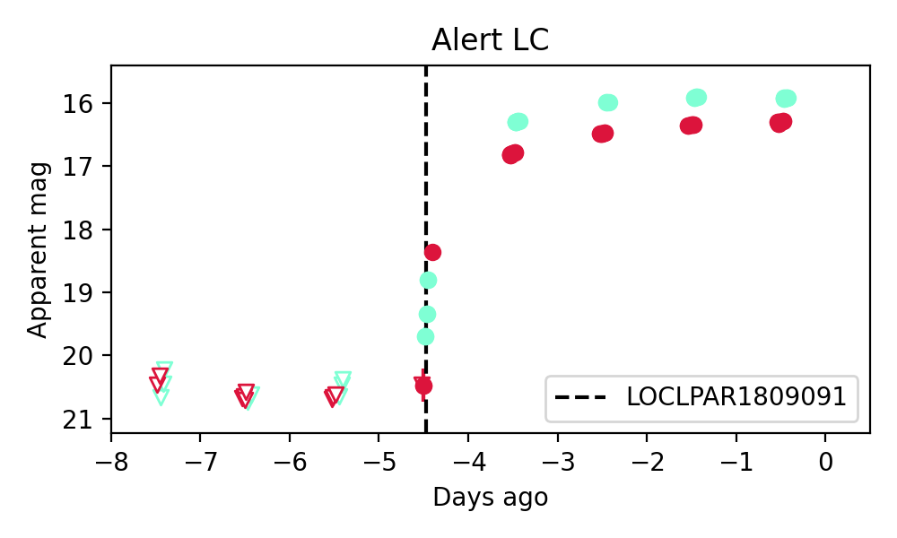

Candidate List 20180910Previous Day Next Day
Section 1: New Sources (age<1d) Section 2: Old (1-5d) sources observed last nightplaceholder
Section 2: Older Sources Observed Last Night (1)
0. ZTF18abukavn (FBOT?) (TNS: S) [Back to Top] [Share] [Trigger Swift] [Fritz] [Lasair]RA, Dec: 250.95085, 41.04538 16h43m48.21s, 41d 2m43.36sGalactic (l, b): 65.09807, 40.85969 ext(g-r) = 0.011
SDSS (10 arcsec):Found SDSS phot-z: z=0.06; peak abs mag = -21.09
PS1: 0 sources in 3 arcsec
LegacySurvey: 1 sources in 3 arcsec Closest: d = 0.54 arcsec, 80.1 deg (east of north) photoz=0.03 (68% bounds 0.01, 0.05), type=SER peak abs mag = -19.28 (68% bounds -17.18, -20.48)

Extinction-corrected gr color:
From alerts: -0.52 +/- 0.02 mag
Rise Rate:
g: 2.83 mag/day
r: 2.11 mag/day
i: -99 mag/day
Fade Rate:
g: -99 mag/day
r: -99 mag/day
i: -99 mag/day